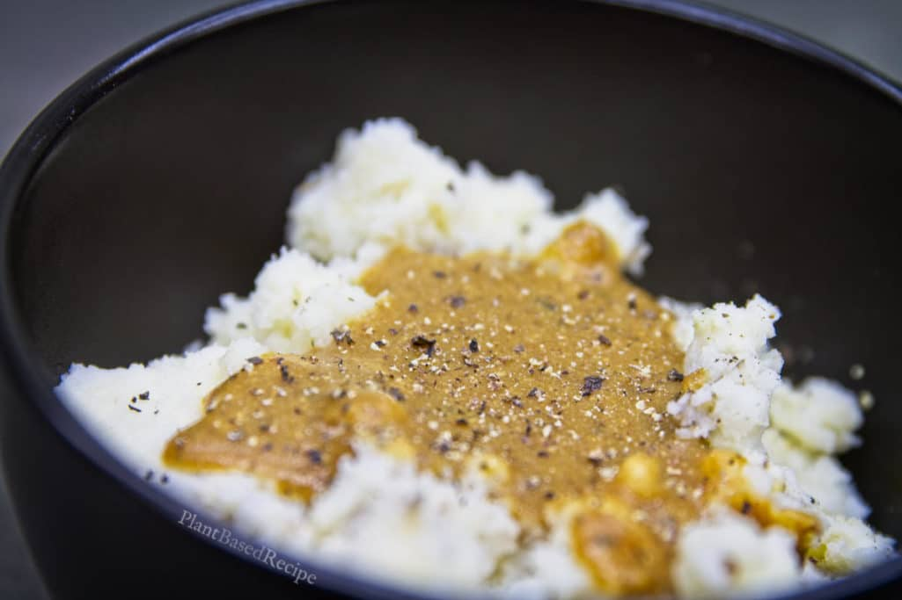

Vegan Pepper Gravy

Simple to make vegan gravy
This pepper gravy is perfect for topping mashed potatoes with. It’s great as part of a holiday meal, or something on the weekday since it is simple and quick to make.
Ingredients
Dry Ingredients
- 1/4 Cup whole wheat flour
- 1/4 Cup Nutrtional Yeast
- 2 tsp Onion Powder
- 2 tsp sage or double, fresh
- 1 tsp garlic poweder
- 1 tsp thyme or double, fresh
- 1 tsp majoram
- 1 tsp yellow mustard powder
- 1/2 tsp white pepper
- 1/4 tsp black pepper
Wet Ingredients
- 2 Cups low soldium veg broth or homemade no sodium, etc
Steps
-
Add all of the dry ingredients to a pan on medium heat, and keep stirring until well toasted (the color will change to a deep brown). You almost want this to burn, but obviously not quite.
-
Slowly add vegetable broth to the dry ingredients while vigorously whisking to remove any clumps.
-
On med to low heat, continue whisking while the gravy simmers until it thickens to desired consistency.
Optional Notes: You can substitute fresh onion, garlic, and herbs instead of using dried. Simply double the amounts, mince fine in a food processor, and add to wet ingredients mixture instead
Back to homepage